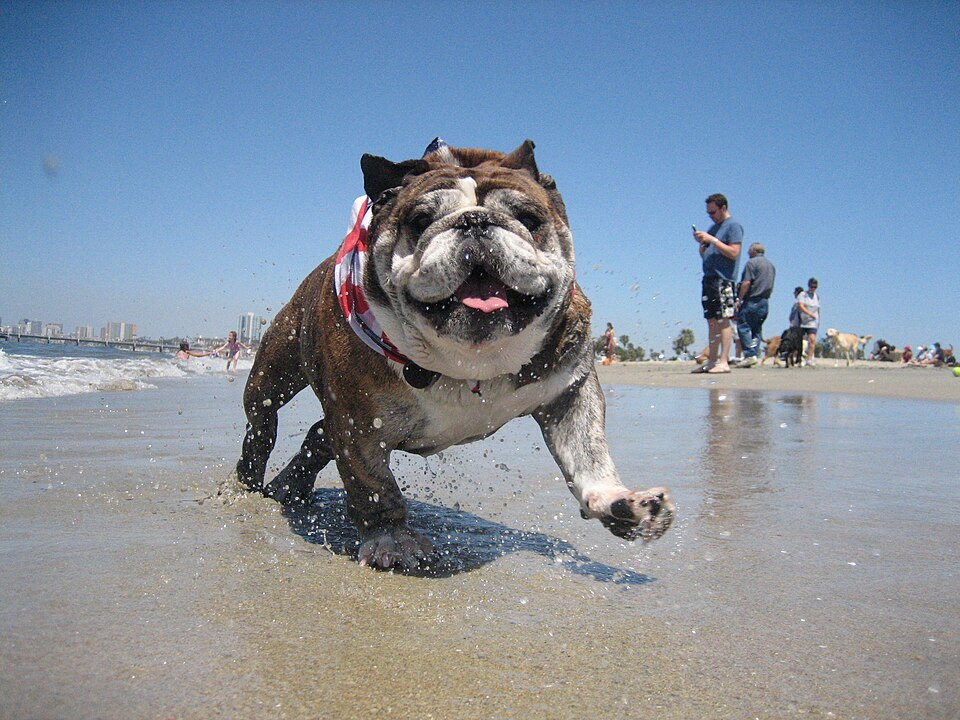

Rosie’s Dog Beach Swim
- Fenced No — 4.1-acre open beach dog zone (not a fenced park)
- Water Yes — Pacific Ocean beach / surf
- Small-dog area No
- Hours 6 a.m. – 8 p.m. daily (city page); leash on access paths
Often described as the only off-leash dog beach in Los Angeles County. Metered parking at Granada Ave lot; bring bags (some dispensers on site). May close for events or beach conditions.